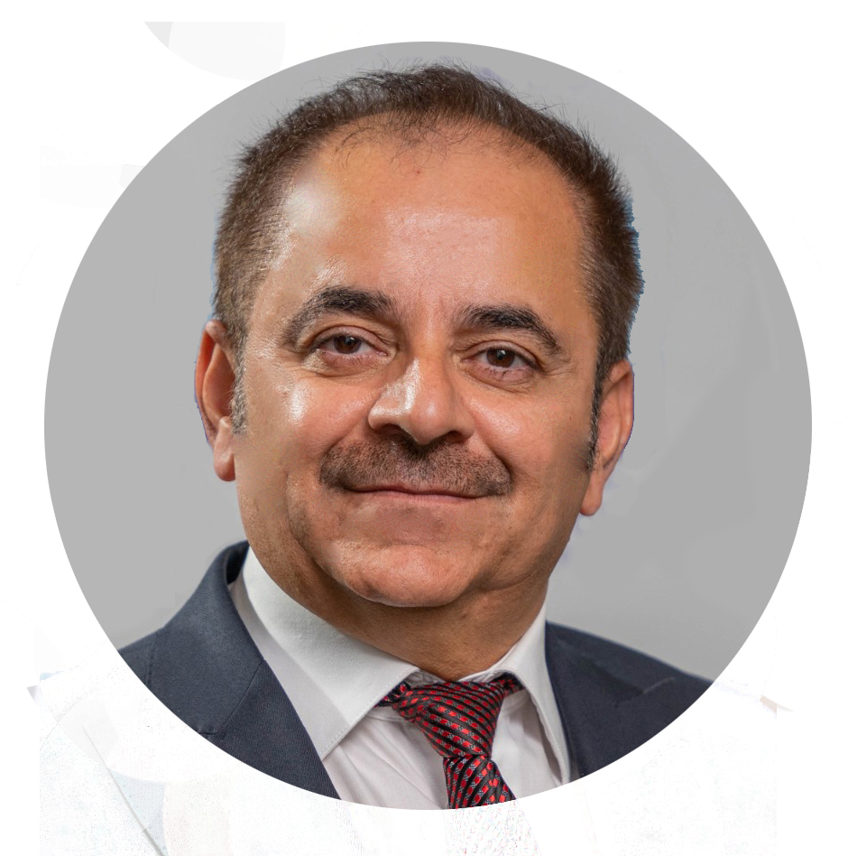

Professor Ibrahim Ismael Hamarash
Teaching Portfolio
Teaching Experience
1. Undergraduate Courses
- 2024-2025 - Special Topics in Software Engineering, Dept. of Computer Engineering, University of Kurdistan-Hewler.
- 2018-2023 - Human Computer Interaction, Dept. of Computer Science and Engineering, University of Kurdistan-Hewler.
- 2018-2023 - Signals and Systems, Dept. of Computer Science and Engineering, University of Kurdistan-Hewler.
- 2019-2020 - Industrial Computer Application, Dept. of Computer Science and Engineering, University of Kurdistan-Hewler.
- 1993-2012 - Control Engineering, Dept. of Electrical Eng., College of Eng., University of Salahaddin-Erbil.
- 2000-2006 - Database Systems, Dept. of Software Eng., College of Eng., University of Salahaddin-Erbil.
- 2000-2005 - Computer Control Systems, Dept. of Software Eng., College of Eng., University of Salahaddin-Erbil.
- 2000-2005 - Computer Architecture, Dept. of Software Eng., College of Eng., University of Salahaddin-Erbil.
- 2000-2002 - Computer Organization, Dept. of Computer Science, College of Education, University of Salahaddin-Erbil.
- 2000-2004 - Principles of Procedural and Structured Programming, Dept. of Electrical Eng., College of Eng., University of Salahaddin-Erbil.
2. Postgraduate Courses
- 2019-2025 - Software Architecture and Design (MSc.Course), Dept. of Computer Science and Engineering, University of Kurdistan-Hewler.
- 2018-2025 - ITSM (MSc. Course), Dept. of Computer Science and Engineering, University of Kurdistan Hewler.
- 2021-2023 - Robotics (PhD. Course), Dept. of Electrical Engineering, Salahaddin University-Erbil.
- 2020-2023 - Machine Learning (MSc Course), Dept. of Computer Science and Engineering, University of Kurdistan-Hewler.
- 2018-2023 - Robotics (MSc. Course), Dept. of Computer Science and Engineering, University of Kurdistan-Hewler.
- 2020-2021 - Human Computer Interaction (PhD. Course), Dept. of Computer Science, University of Sulaimani.
- 2017-2018 - Advanced Topics in Control Theory (PhD. course), Dept. of Mechanical Engineering, Salahaddin University, Erbil, Kurdistan, Iraq.
- 2008-2009 - Information System Integration (MSc, Dept of Software Eng, College of Engineering and Dept of Computer Science, College of Education, Salahaddin University-Erbil).
- 2007-2008 - Computer Architecture and Organization (MSc Electronics and Communication Eng, Univ. of Salahaddin-Erbil).
- 2005-2006 - Advance Control Systems (PhD. in Mechanical Engineering), Dept. of Mechanical Eng., University of Salahaddin-Erbil, Kurdistan, Iraq.
- 2005-2006 - Computer Architecture and Parallel Processing (MSc. in ICT), Dept. of Electrical Eng., University of Salahaddin-Erbil, Kurdistan, Iraq.
- 2005-2006 - Data Modeling (MSc in ICT.), Dept. of Electrical Eng., University of Salahaddin-Erbil, Kurdistan, Iraq.
- 2005-2006 - Control Theory (MSc in Power Engineering), Dept. of Electrical Eng., University of Salahaddin-Erbil, Kurdistan, Iraq.
- 2004-2005 - Dynamic Systems (MSc in Power Systems), Dept. of Elect. Eng., University of Sulaimani, Sulaimani, Kurdistan, Iraq.
- 2003-2004 - Computer Architecture and Organization (Higher Diploma in IT) Dept. of Software Eng., College of Eng., University of Salahaddin-Erbil.
- 2003-2004 - Data Modeling and Database Systems (Higher Diploma in IT) Dept. of Software Eng., College of Eng., University of Salahaddin-Erbil.
- 2002-2003 - Data Modeling (Ph.D. in Statistics) Dept. of Statistics, College of Administration and Economic, University of Salahaddin-Erbil.
- 2001-2004 - Modern Control Engineering (MSc in Power Systems), Dept. of Electrical Eng., College of Eng., University of Sulaimani, Sulaimani. And College of Engineering, Salahaddin University-Erbil, Erbil.
3. Crash Courses
- 2022 - Learn Robotics with Ibrahim Hamarash (using MyCobot 280 M5 Manipulator), University of Kurdistan Hewler, Erbil, Kurdistan, Iraq.
- 2005 - Human Recourse (HR) Systems, Ministry of Education, Kurdistan, Iraq.
- 2003 - Data Modeling and Database Systems, College of Engineering and UNESCO, Erbil, Kurdistan, Iraq.
- 2002 - Developing Computer Skills for the Administration Staff (Deans and President) of the University of Salahaddin/Hawler, UNESCO.
- 2001 - Computer Systems Assembly and Troubleshooting, Salahaddin University-Erbil and UNESCO, Erbil, Kurdistan, Iraq.
4. Selected Public Seminars Outside the University
- 2024 - Unlocking Grant Success, Koya University, Koya, Kurdistan, Iraq.
- 2024 - AI and Linguistics, Khani Organization for Intellectual Studies, Haidari Library, Erbil, Kurdistan, Iraq.
- 2024 - Leveraging ChatGPT in Education, Erbil Polytechnic University, College of Technology.
- 2024 - The Future of AI, Erbil International Book Fair.
- 2024 - The Role of AI in Academic Publication, Ministry of Higher Education and Scientific Research, KRG.
- 2024 - Kurdish Language in the era of Artificial Intelligence, Kurdish Writer’s Union, Erbil, Kurdistan, Iraq.
- 2024 - Watch on YouTube